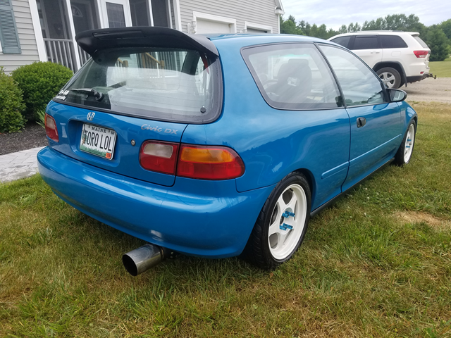
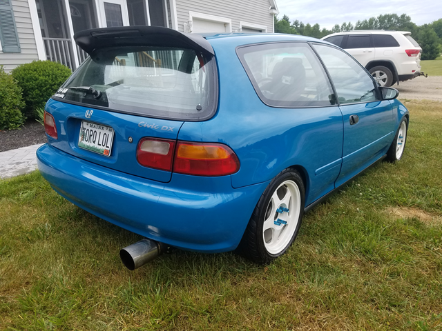

Ten months of work finally pays off
I enjoy working on my own vehicles but by far the best part is finishing up. While it took longer than I hoped, and the deadlines I kept setting for myself came and went I can say it was worth the wait. Today was the second day of driving, and started off with topping off the tank. It hadn’t been gassed up since last September and was pretty much on E.
While my Jeep Cherokee may not be horrible on gas it was kind of a relief to see if only took 9 gallons to fill up the civic compared to 16. I travel quite a bit and can easily rack up 500 miles a week which is slowly taking a toll on my wallet.
The civic also finally got a much needed wash. While it may still be covered in overspray, it does shine up quite nicely. I figure in a month or so I’ll go through it fully with a nice clay bar, machine polish, and wax to finish. Hopefully I can hit up a car show before the end of the year as well.
 


Swap Thoughts
I’ve never had the chance to drive a swapped honda till now. While this swap may not be the fastest or coolest out there it really brings the car to life. The B20B pairs very nicely with the LS trans. Seems like there’s a fair amount of dislike on LS transmissions since they’re the longest geared B series transmission, but honestly it works great for long back roads. The engine pulls nicely through out it’s entire power band and regardless of the gear the car just wants to go. The motors not winded right up when travelling at 50+ either.

I do miss power steering though, and plan on adding it back soon. Just need to do a little research on what pump to use. From what I understand is the hose that connects the pump to the rack differs between obd1 and obd2. I can’t imagine it’ll take too much to figure out.

Sometime in the future I plan on upgrading to a tuck radiator. The current one is a cheap ebay unit and I plan on replacing every single ebay part currently on the car. While cheap prices may be enticing they just aren’t worth it when it comes to the quality, and how long the parts tend to last.

But for now it’s time to just enjoy the car and have some fun with the low end power of the b20b.